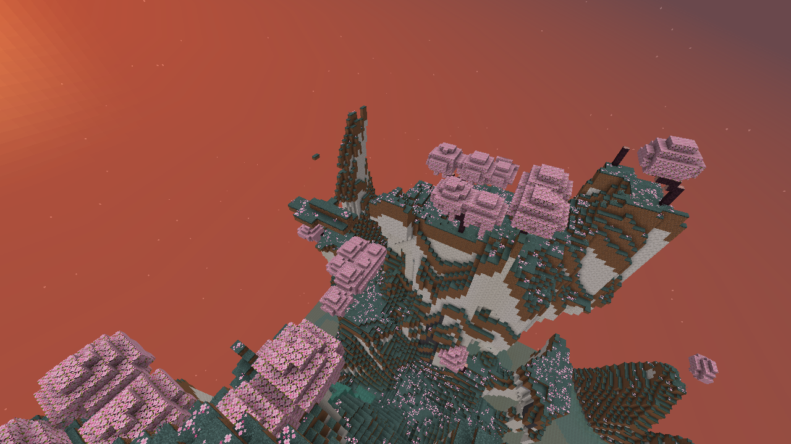
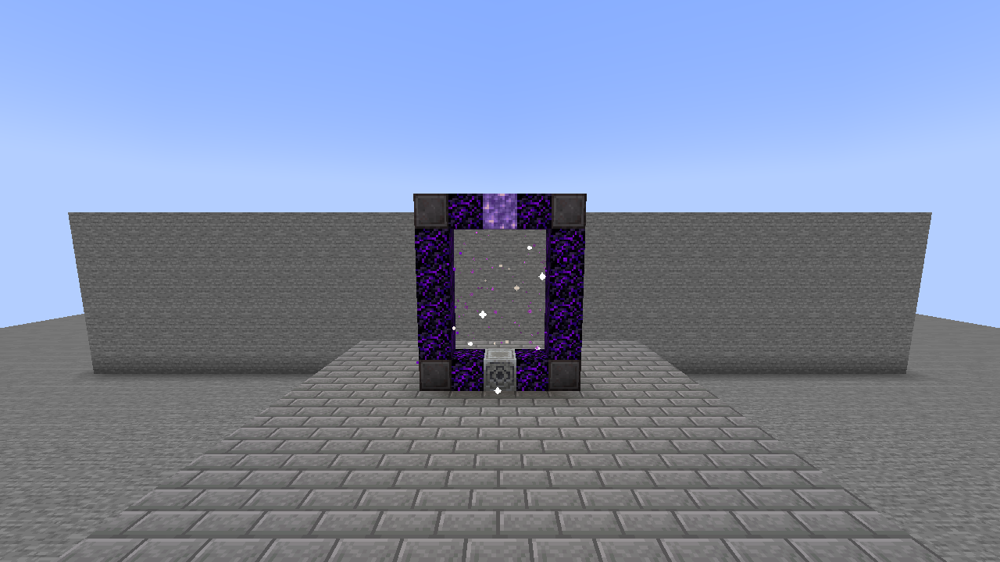
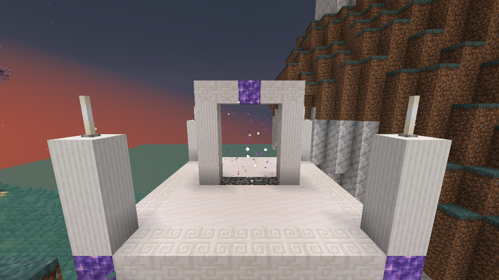

A late-game dimension of pale ridges, cherry groves and misty basins. 5,000,000 actual maximum EP is required to enter. EP is checked, not spent. Supports single-player and multiplayer.
On this page

Gate
Build a vertical 5 × 6 frame in either direction. Its 3 × 4 opening must be empty, without fluids.
N C A C N
C . . . C
C . . . C
C . . . C
C . . . C
N C L C N
| Symbol | Material | Count |
|---|---|---|
| N | Netherite Block | 4 |
| C | Crying Obsidian | 12 |
| A | Amethyst Block | 1 |
| L | Lodestone | 1 |
| . | Empty opening | — |
Use one Nether Star on the Lodestone to awaken the gate. In survival, the star is consumed once. Stand inside the awakened arch for 2 seconds, or use its Lodestone, to enter. Every player must meet the EP requirement. Breaking the frame disables it.

Landscape and enemies
The realm stays in twilight. Terrain uses existing Minecraft and Tensura blocks, with native magic ore, emeralds and rare diamonds in the calcite and basalt.
| Biome | Landscape | Elite inhabitants |
|---|---|---|
| Ivory Crags | Calcite mountains with basalt bands | High Orcs, Armorsauruses, Horned Bears, Greater Daemons |
| Starwood Grove | Pale grass and cherry groves | Tempest Star Wolves, Blade Tigers, Knight Spiders |
| Mistglass Basin | Mossy basins, clay and turquoise water | Dragonewts, Basilisks, Arch Daemons |
The natural spawn pool is entirely Tensura mobs. Bosses are excluded, including the boss-class greater elemental spirits. Elites retain their models, animations and native combat behavior. They alert to nearby survival players, including players with higher EP. Owned mobs, summons and imports are not upgraded.
| Archetype | Members | Base EP | HP floor | SHP floor |
|---|---|---|---|---|
| High Bulwark | High Orc, Armorsaurus, Horned Bear | 2,500,000 | 1,024 | 5,000 |
| High Sentinel | Dragonewt, Basilisk, Greater/Arch Daemon | 1,750,000 | 850 | 3,200 |
| High Stalker | Tempest Star Wolf, Blade Tiger, Knight Spider | 1,250,000 | 700 | 2,400 |
Native skills can alter final stats. All elites gain 11–17 core mastered skills in addition to their retained native abilities. Their toggles are enabled; skills that require a preset slot are equipped.
Natural spawning accepts 50% of otherwise valid attempts and stops adding enemies when 16 living unowned elites are already within 64 blocks. Existing mobs remain; spawning resumes as the area clears. Commands, summons and other dimensions retain their normal rules.
Final forms
The pool uses the highest implemented non-boss forms of its existing creatures: High Orc, Tempest Star Wolf, and Dragonewt. Wolves receive their native evolution bonuses and final star variant; Dragonewts receive native flight, Dragon Eye, Dragon Ear, Dragon Mode and a native breath skill. Creatures without a further implemented mob evolution stay in their existing forms. Orc Lord and Orc Disaster remain excluded because they are bosses.
The daemon tiers are Greater Daemon in the crags and Arch Daemon in the basin. Their spell packages match each class’s native combat AI.
Shared skills
Every elite receives Physical Attack Resistance, Magic Resistance, Pain Resistance, Spiritual Attack Resistance, Magic Sense, Danger Sense, and Ultraspeed Regeneration. Listed nullifications supply the higher defense; native lower-tier entries may remain. Regeneration uses native resources; these enemies do not receive Infinite Regeneration.
Species specialties
Every species has a mastered Unique Skill. These supplement the shared skills. Fighter is reserved for Horned Bears.
Shadow Striker supplies the wolf’s acceleration and dodge; Oppressor gives the spider native arrow/fall immunity; Martial Master strengthens the Dragonewt’s physical attacks and dodge; Survivor protects the Basilisk from debilitating effects. Engorger enlarges Greater Daemons, boosts their combat attributes and provides native healing; Mathematician adds faster chanting, dodge and resistance degradation to Arch Daemons. These passives function automatically. Player-operated menus and active techniques are not driven by mob AI.
| Species | Added skills |
|---|---|
| High Orc | Berserker, Steel Strength, Strengthen Body, Pain Nullification, Flame Attack Resistance, Paralysis Resistance |
| Armorsaurus | Survivor, Body Armor, Scale Armor, Strength, Physical Attack Nullification, Pierce Resistance, Gravity Attack Resistance |
| Horned Bear | Fighter, Steel Strength, Pain Nullification, Cold Resistance, Paralysis Resistance |
| Tempest Star Wolf | Shadow Striker, Godwolf Sense, Black Lightning, Ultra Instinct, Shadow Motion, Steel Strength, Electricity Nullification, Paralysis Resistance, Wind Attack Resistance, Poison Resistance |
| Blade Tiger | Seer, Steel Strength, Wind Attack Nullification, Pierce Resistance, Paralysis Resistance |
| Knight Spider | Oppressor, Body Armor, Steel Strength, Poison, Poison Nullification, Paralysis Resistance, Pierce Resistance |
| Dragonewt | Martial Master, Scale Armor, Water Breathing, Steel Strength, Water Attack Nullification, Corrosion Resistance |
| Basilisk | Survivor, Scale Armor, Steel Strength, Poison, Paralysis, Poison Nullification, Paralysis Nullification |
| Greater Daemon | Engorger, Mana Manipulation, Flame/Water/Wind/Lightning/Earth Manipulation, Flame Attack Nullification, Water Attack Resistance |
| Arch Daemon | Mathematician, Mana Manipulation, Flame/Water/Wind/Lightning/Earth Manipulation, Flame Attack Nullification, Electricity Nullification, Darkness Attack Resistance |
Combat magic
The daemon spells are actually used by their native combat AI, with native casting circles, attack animations, projectiles and magicule costs. Elemental manipulation skills strengthen their corresponding magic.
| Caster | Magics |
|---|---|
| Greater Daemon | Fire Lance, Acid Shell, Icicle Lance, Tornado Blade, Thunder Orb, Stone Shot, Sleep Mist |
| Arch Daemon | Fire Ball, Acid Shell, Ice Breaker, Tornado Blade, Water Jail, Mud Spears, Stone Shot, Thunder Orb |
Rewards
Player or subordinate kills retain normal loot and EP and add 1–3 Amethyst Shards, with a 20% chance of native Magic Ore and a 2% chance of Netherite Scrap.
Rare otherworlder boss
Kael Veyr, the Starless Wayfarer is a 15 million EP Divine Human / True Hero who can rarely appear in any of the realm’s three biomes. He uses a Hihiirokane Sword, native sword arts, Wind Domination and learned wind magic.
He has a separate spawn rule from ordinary elites: weight 1, an additional 2.5% acceptance roll, a 20-minute realm-wide spawn cooldown, no other wild Kael within 512 blocks, and no spawning within 192 blocks of the return sanctum. An elapsed cooldown allows another roll; it does not guarantee a spawn.
Returning
The quartz return arch in the arrival sanctum is the return gate. Walk through it or use its central bedrock base. Leaving has no EP requirement. Each player returns near their own entrance; obstructed exits use nearby safe ground or the Overworld spawn.
The small arrival sanctum is protected from normal block edits. Natural hostile spawns are suppressed within 48 blocks of its center. The rest of the dimension can be mined and built in. Beds do not work here.

Saves and settings
The dimension is added to existing saves. Its terrain, awakened gates and individual return points persist after a restart. World Hop generates a fresh realm for a new seed; returning to a previously visited world restores that world's realm.
Existing eligible unowned elites receive applicable same-entity evolutions and loadouts when loaded, without refilling resources. Existing unowned elites also receive the halved EP balance once when loaded; current aura and magicules are capped to the new capacity. HP, SHP, damage and skill packages are unchanged. Owned mobs remain unchanged. Old daemon entities remain until normal despawning; new spawns use the upgraded types. Existing vanilla elites are left to despawn normally; no new vanilla elites spawn.
Server settings are in serverconfig/tensura-additions-high-realm.toml: entryEP, gateChargeTicks, elitePower, eliteSpawns, eliteSpawnChance (default 0.5) and eliteLocalCap (default 16). Kael uses wayfarerSpawns, wayfarerSpawnChance (default 0.025) and wayfarerSpawnCooldown (default 24000 ticks). Changing elite strength affects new spawns. Up to 256 awakened gates can be registered in one world.
Find this page under Dimensions in the searchable F8 guide.
The entry default is 5M EP. On the first upgrade, existing worlds using the old 10M setting move to 5M. Other custom thresholds are retained; later manual changes are preserved.
Chromatic crafting
Unowned elites have a 25% chance to drop their archetype’s Bulwark, Sentinel or Skirmisher Shard when killed by a player or their subordinate. Combine one of each with Kael’s guaranteed Starless Core to craft a Chromatic Orb.